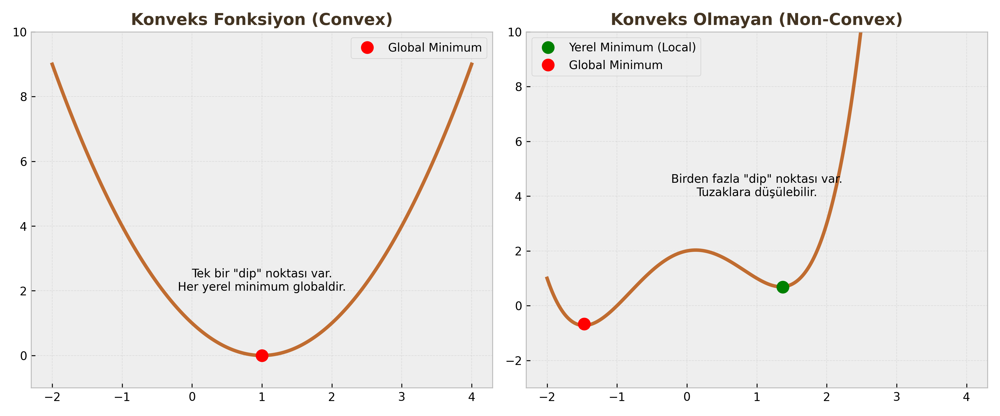
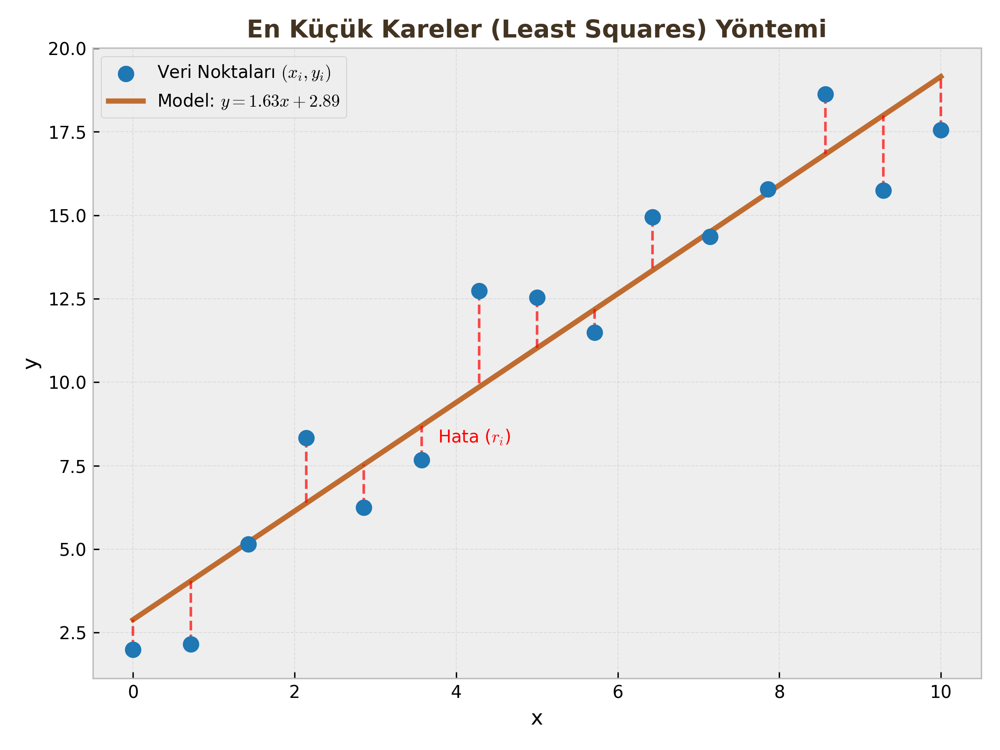

Matematiksel Optimizasyonun Temelleri
Yapay Zeka modellerinin (Lojistik Regresyon, Sinir Ağları vb.) öğrenmesi, aslında birer optimizasyon işlemidir. Bu derste "En iyi parametreleri nasıl buluruz?" sorusunun matematiksel altyapısını kuracağız.
1. Introduction to Mathematical Optimization (Giriş)
Optimizasyon, belirli kısıtlar altında bir amacı (maliyeti, süreyi, hatayı) en aza indiren (veya karı maksimize eden) çözümün bulunmasıdır.
Arama vs. Optimizasyon
Daha önce gördüğümüz Arama Algoritmaları (BFS, DFS, A*) ile Matematiksel Optimizasyon arasında temel farklar vardır:
- Arama Problemleri: Genellikle Ayrık (Discrete) ve Sonlu (Finite) uzaylarda çalışır. Ancak durum sayısı arttıkça karmaşıklık Üstel (Exponential) artar. (Örn: Satranç tahtası).
- Matematiksel Programlama: Genellikle Sürekli (Continuous) değişkenlerle çalışır. Değişkenler reel sayılardır ($x \in \mathbb{R}^n$).
Optimizasyon Probleminin Resmi Tanımı
Standart bir optimizasyon problemi şu formatta yazılır:
$$ \begin{align} \text{minimize} \quad & f_0(x) \ \text{subject to} \quad & f_i(x) \le b_i, \quad i = 1, \dots, m \end{align} $$
Burada:
- $x = (x_1, \dots, x_n)$: Optimizasyon değişkenleri vektörü.
- $f_0(x)$: Amaç Fonksiyonu (Objective Function). (Minimize etmek istediğimiz maliyet).
- $f_i(x)$: Kısıt Fonksiyonları (Constraints).
- $b_i$: Kısıt sınırları.
Temel Kavramlar:
- Uygulanabilir Bölge (Feasible Region): Tüm kısıtları ($f_i(x) \le b_i$) sağlayan $x$ değerlerinin oluşturduğu kümedir.
- Optimal Çözüm ($x^*$): Uygulanabilir bölge içinde $f_0(x)$ değerini en küçük yapan $x$ vektörüdür.
2. Optimization Problems (Problem Türleri)
Optimizasyon dünyasında en kritik ayrım şudur: Problem Konveks (Dışbükey) mi, yoksa Konveks Değil (Non-Convex) mi?

A. Konveks Küme (Convex Set)
Bir kümenin konveks olması için şu şartı sağlaması gerekir:
"Küme içindeki herhangi iki noktayı birleştiren düz çizgi, tamamen kümenin içinde kalmalıdır."
- Örnek: Daire içi, küp içi, üçgen içi konvekstir.
- Konveks Olmayan: Hilal şekli (uçları birleştiren çizgi boşluktan geçer), simit şekli.
B. Konveks Fonksiyon
Bir fonksiyonun konveks olması, grafiğinin bir "Kase" (Bowl) veya "Vadi" şeklinde olması demektir.
Tanım: Fonksiyon eğrisinin üzerindeki herhangi iki noktayı birleştiren kiriş (chord), fonksiyonun üzerinde kalıyorsa o fonksiyon konvekstir.
$$f(\alpha x + (1-\alpha)y) \le \alpha f(x) + (1-\alpha)f(y)$$
Kritik Sınav Bilgisi: Neden Konvekslik Önemli?
Konveks bir fonksiyonda Yerel Minimum (Local Minimum) aynı zamanda Global Minimumdur. Yani, çukru bulduğunuzda "Acaba daha derin bir çukur var mı?" diye endişelenmenize gerek yoktur. Non-Convex problemlerde (Sinir Ağları gibi) ise birçok yerel tuzak vardır.
C. Lineer Eşitsizlikler ve Kesişimler
Her lineer kısıt ($a^T x \le b$), uzayı ikiye böler ve bir Yarı-Uzay (Half-Space) tanımlar.
- Yarı-uzaylar konveks kümelerdir.
- Konveks kümelerin kesişimi de konvekstir.
- Bu nedenle, lineer kısıtlarla tanımlanan uygulanabilir bölge (poliedron) her zaman konvekstir.
3. Application: Least Squares (En Küçük Kareler)
Optimizasyonun mühendislikteki en yaygın uygulamasıdır. Bir veri bulutuna en uygun doğruyu veya eğriyi uydurma (Curve Fitting) işlemidir.
Problem Tanımı
Elimizde $(x_i, y_i)$ şeklinde veri noktaları var. Biz bu noktaları en iyi temsil eden $y = ax + b$ doğrusunu arıyoruz.
- Değişkenler: $a$ (eğim) ve $b$ (kesim noktası).
- Model Tahmini: $\hat{y}_i = ax_i + b$
Hata (Residual) Fonksiyonu
Her bir nokta için gerçek değer ile tahmin arasındaki farka "artık" (residual) denir: $$r_i = y_i - (ax_i + b)$$

Amaç Fonksiyonu
Amacımız hataları sıfırlamak değil (imkansız olabilir), hataların büyüklüğünü minimize etmektir. Negatif hatalar pozitifleri götürmesin diye kareleri toplamını minimize ederiz.
$$\text{minimize} \quad \sum_{i=1}^{m} r_i^2 = \sum_{i=1}^{m} (y_i - (ax_i + b))^2$$
Bu fonksiyon ($J(a, b)$), parametrelere göre Konveks (Parabolik) bir yapıdadır. Yani tek bir dibi vardır.
Çözüm Yöntemi
Kalkülüs kullanarak türev alır ve sıfıra eşitleriz:
- Hata fonksiyonunun $a$'ya göre kısmi türevi alınır ve 0'a eşitlenir: $\frac{\partial J}{\partial a} = 0$
- Hata fonksiyonunun $b$'ye göre kısmi türevi alınır ve 0'a eşitlenir: $\frac{\partial J}{\partial b} = 0$
Bu işlem bize kapalı formda (Analytical Solution) optimal $a^{\ast}$ ve $b^{\ast}$ değerlerini verir.
Öğrenci Notu
Neden Mutlak Değer ($|r_i|$) değil de Kare ($r_i^2$) kullanıyoruz? Çünkü kare fonksiyonu her noktada türevi alınabilir (differentiable) bir fonksiyondur. Mutlak değer fonksiyonunun $0$ noktasında türevi yoktur (sivri uç), bu da optimizasyonu zorlaştırır.
İspat: Eğim (m) Formülünün Türetilmesi
Amaç, Hata Kareler Toplamı (SSE) fonksiyonunu minimize etmektir: $$E(m, c) = \sum_{i=1}^{n} (y_i - (mx_i + c))^2$$
1. Türev Al ve Sıfıra Eşitle: Eğimi bulmak için fonksiyonun $m$'ye göre kısmi türevini alıp 0'a eşitleriz (Zincir kuralı uygulanır): $$\frac{\partial E}{\partial m} = \sum_{i=1}^{n} 2(y_i - (mx_i + c)) \cdot (-x_i) = 0$$
2. Düzenle ve Dağıt: Her iki tarafı -2'ye bölüp, toplam sembolünü terimlere dağıtırsak: $$\begin{align} \sum (y_i - mx_i - c)x_i &= 0 \\ \sum x_i y_i - m \sum x_i^2 - c \sum x_i &= 0 \\ \sum x_i y_i &= m \sum x_i^2 + c \sum x_i \end{align}$$
3. Yerine Koyma (Substitution): Sabit terim ($c$) için bildiğimiz $c = \bar{y} - m\bar{x}$ eşitliğini ve $\sum x_i = n\bar{x}$ bilgisini denklemde yerine koyup $m$'yi yalnız bırakırız.
4. Sonuç: Gerekli cebirsel dönüşümler (kovaryans ve varyans formuna geçiş) yapıldığında nihai formül elde edilir: $$m = \frac{\sum_{i=1}^{n} (x_i - \bar{x})(y_i - \bar{y})}{\sum_{i=1}^{n} (x_i - \bar{x})^2}$$